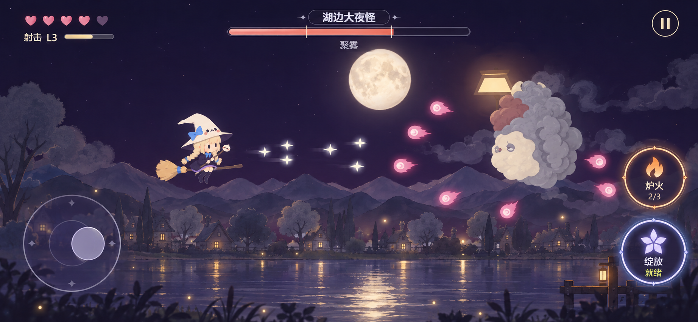
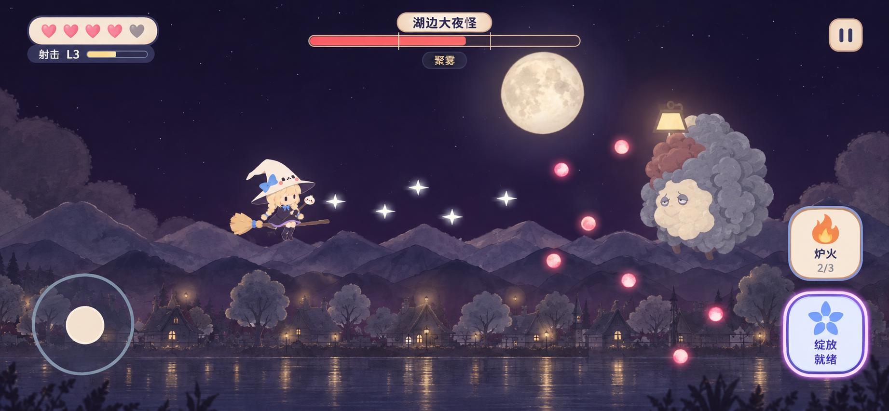

A · 月光悬浮
透明深紫、轻盈圆形按钮、暖橙炉火与蓝紫绽放。信息直接浮在夜景上，强调开阔的飞行空间。

两种横屏战斗界面方向。imagegen 视觉效果图，用于确认样式与信息排布。游戏玩法与素材继续沿用当前项目。
透明深紫、轻盈圆形按钮、暖橙炉火与蓝紫绽放。信息直接浮在夜景上，强调开阔的飞行空间。

奶油色圆角徽章、深色文字和简洁图标。状态分组更明确，手机上的按钮与数值容易辨认。

| 区域 | 内容 |
|---|---|
| 左上 | 生命、射击等级与成长进度 |
| 顶部中央 | 阶段信息；Boss 出现时显示名称、血条与阶段刻度 |
| 右上 | 暂停；电脑空间充足时显示分数 |
| 手机左侧 | 移动摇杆，触屏自动射击 |
| 手机右侧 | 炉火与绽放两枚按钮；库存和能量直接放在各自按钮内 |